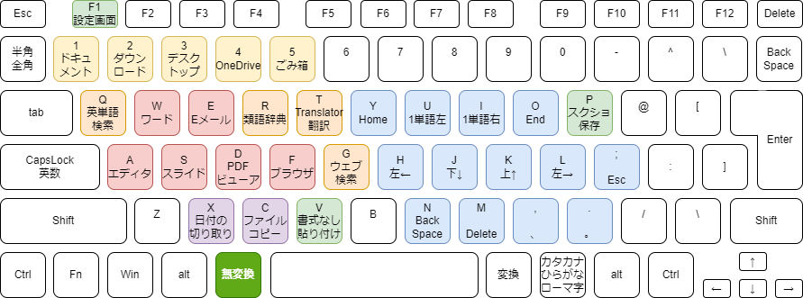
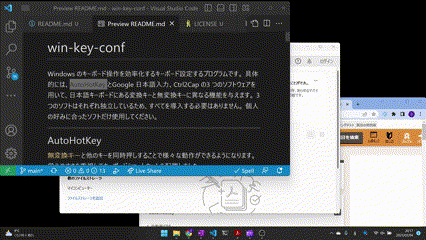
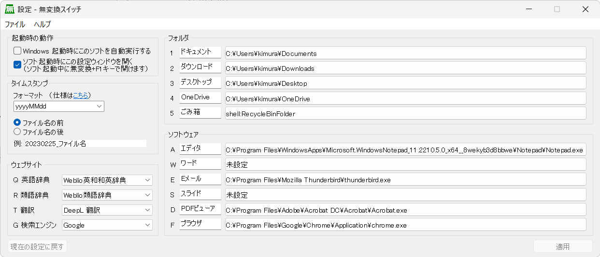

無変換キーと他のキーを同時押しすることで様々な動作ができるようになります。
無変換キー単体は無変換キーとして効きます。
現状の機能を消すことなく、覚えやすさを重視してキーボードショートカットを配置しました。
muhenkan-switch.zip をダウンロード。C:\Users\ユーザ名 以下であればお好みのフォルダの中に入れられます。入れては行けない場所としてはC:\Program Files 以下など。)muhenkan.exe を実行。設定画面を閉じた後もソフトバックグラウンドで実行され続けます。終了は設定画面から可能です。初期設定は以下の通りです。

無変換キー+左手（右手はマウスを操作していることを想定）
F1: 設定の変更 を行うウィンドウを表示1: ドキュメント2: ダウンロード3: デスクトップ4: OneDrive5: ごみ箱Q: 英単語検索R: 類語辞典T: 翻訳（Translator）G: Web 検索A: エディタW: ワードE: EメールS: スライド（パワーポイント）D: PDF ビューア（ドキュメント閲覧）F: ブラウザV: ファイル名に最後に編集した日付のタイムスタンプを貼り付けC: コピーして、新しくできたファイルの名前に最後に編集した日付のタイムスタンプ貼り付けX: タイムスタンプの切り取り無変換キー+右手（両手がホームポジションにあることを想定）
H, J, K, L: 1文字カーソル移動U, I: 単語で左右カーソル移動Y, O: Home、End カーソル移動N, M, ; BackSpace, Delete, Esc,, . カンマピリオドで句読点(、, 。) を入力（IMEで．と，にセットしている人は助かるかも）Ctrl + Shift + V : 書式なしで貼り付け（エディタソフトは除く）| 入力文字列 | 置換入力例 |
|---|---|
| ;date | 20230225 |
| ;dateu | 2023_0225 |
| ;dates | 2023/02/25 |
| ;dated | 2023.02.25 |
| ;time | 1605 |
| ;timec | 16:06 |
| ;datetime | 20230225_1602 |

Q はQuestion から連想します。A はAtom を使っていたからです。F はFireFox を使っていたからです。XCV は、切り取り、コピー、ペーストなどを連想して覚えてください。HJKL はVim 準拠YUIO はキーの位置と横移動の大きさを関連付けています。NM は両方とも人差し指で操作する。位置関係はカーソルが動く方向に対応しています。
無変換キー+F1 で設定画面が開き、設定の確認と変更ができる。
無変換キー+F1 の設定画面からファイル→終了。ソフトがあるファイルを開くか聞かれるのではい（Yes）を選択。公式のサンプルを参考にしているため、GNU GPLv2 とします。
AutoHotKey : https://www.autohotkey.com/docs/v2/license.htm